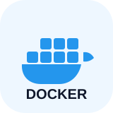
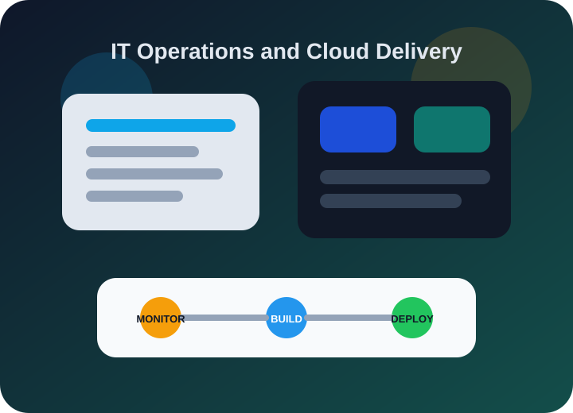

Jenkins
Pipeline automation and CI/CD workflow practice.
I am Krishna Anil Pawar, a Bachelor of Computer Science student focused on DevOps. I have completed my Linux learning path and I am actively building skills in CI/CD pipelines, cloud infrastructure, cloud automation, AWS, Jenkins, Docker, and Kubernetes.
I want to grow into a DevOps engineer who can contribute across Linux administration, CI/CD implementation, cloud environments, infrastructure automation, and containerized deployments. My goal is to work on real systems, keep learning through hands-on practice, and build dependable workflows that support modern software teams.
I am interested in how cloud resources are provisioned, organized, and maintained efficiently.
I want repeatable processes that reduce manual effort and improve consistency across environments.
I am learning how pipelines, containers, and orchestration improve delivery quality.
I am still early in the journey and committed to building stronger practical experience step by step.
I am shaping my portfolio around practical DevOps capabilities rather than only theory. The goal is to become comfortable with the full path from code integration to cloud deployment.
Pipeline automation and CI/CD workflow practice.

Container builds, image delivery, and app portability.
Cluster basics, orchestration concepts, and scaling.
System navigation, permissions, and terminal confidence.
Enterprise Linux direction and operations mindset.
Cloud service foundations and deployment-focused learning.
Completed Linux learning and built confidence around command-line workflows, system navigation, and core administration concepts.
Learning how to automate build, test, and deployment stages so software delivery becomes faster and more consistent.
Exploring cloud infrastructure and modern deployment patterns using AWS, Docker, Kubernetes, and automation-driven operations.
I am focused on understanding how code moves through automated build, validation, and deployment stages with minimal manual intervention.
I am learning to think in terms of scalable infrastructure, service availability, deployment environments, and cloud resource organization.
I want to automate repetitive infrastructure and deployment tasks so workflows stay consistent, repeatable, and production-ready.
I am currently enrolled in a Bachelor of Computer Science program and building my technical foundation through academic study.
Built the base needed for system-level understanding and command-line confidence.
Studying Jenkins pipelines and learning how automation supports faster software delivery.
Expanding into AWS, Docker, Kubernetes, and infrastructure-oriented DevOps workflows.
Professional environments depend on infrastructure visibility, standardization, automation, and reliable release systems.

Stable systems, monitoring, server management, and platform health.
Scripts and pipelines that reduce manual work and improve consistency.
Deployment-ready architecture using AWS, containers, and orchestration tools.
Helping developers ship faster through dependable infrastructure workflows.
Internships, entry-level opportunities, collaborative learning, and hands-on DevOps project experience.